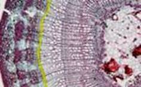
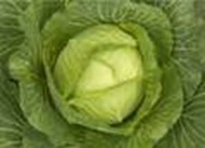
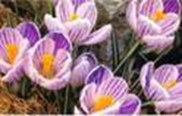
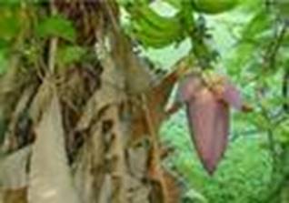

Общие сведения
Растение – целостный организм, все его органы имеют клеточное строение и связаны между собой. Любое нарушение жизнедеятельности одного органа сказывается на других. Сильное нарушение какого-либо органа сказывается на нарушении роста и развития всего растения и может привести к его гибели.
Из углекислого газа и воды в ходе фотосинтеза образуются органические вещества. Из мелких молекул органических веществ могут образовываться более крупные. В ходе дыхания молекулы органических веществ распадаются до углекислого газа и воды с выделением энергии. Таким образом, в ходе дыхания растение освобождает энергию, запасенную в ходе фотосинтеза.
Рост растений
При нормальном функционировании органов и активном обмене веществ происходит рост растений. Части растения увеличиваются в размере. Оно обеспечивается делением и ростом клеток образовательной ткани.
Делящиеся клетки камбия (см. Рис. 1) образуют новые слои коры и ксилема.

Рис. 1. Камбий (выделен желтым)
Конусы нарастания дают новые побеги, а клетки зоны деления корня приводят к его росту.
Развитие растений
Со временем строение растительного организма видоизменяется – происходит его развитие.
Периоды развития покрытосеменных растений
· Зародышевый период. От образования зародыша растения до прорастания семени.
· Период молодости. От прорастания семени до первого цветения растения.
· Период зрелости. Период цветения и плодоношения растения.
· Период старости. Растение перестает цвести, плодоносить, постепенно отмирает.
Фазы – заметные по внешним признакам, при наблюдении, стадии развития растения.
Фазы развития покрытосеменных:
· Прорастание семян
· Появление листьев
· Образование боковых побегов
· Цветение
· Образование плодов
· Созревание семян
Однолетние растения – растения, проходящие все фазы развития за 1 год (астра, томат).
Эфемеры – однолетние растения, заканчивающие цикл развития менее, чем за 1 сезон. Распространены в пустынях, полупустынях.
Двулетние растения – растения, в первый год жизни накапливающие питательные вещества и образующие семена на 2-й год (капуста (см. Рис. 2), морковь, свекла).

Рис. 2. Капуста (первый год жизни)
Многолетние растения – растения, надземные органы которых после цветения и плодоношения отмирают, а сохраняются только подземные органы – корни, корневища, луковицы, клубни (клевер, пырей).
Эфемероиды – многолетние травянистые растения с маленьким вегетативным периодом (крокус (см. Рис. 3), ветреница дубравная, хохлатка). После образования семян не отмирают, а переходят в период покоя.

Рис. 3. Крокус
Корни и ветви растений одного вида и разных особей могут срастаться между собой. Так, целая поляна может быть заполнена одним растением ландыша с длинным корневищем и многими надземными побегами.
Фазы развития однолетних растений
Проведите наблюдение за полным жизненным циклом однолетнего растения на ваш выбор. Для эфемера время наблюдения значительно сократится. Свои выводы о фазах развития растения запишите в тетрадь.
Монокарпические растения
Монокарпические растения – растения, которые живут много лет, но цветут и плодоносят 1 раз в жизни (агава, банан (см. рис. 4), черный бамбук).

Рис. 4. Банан
Клонирование
Клонирование – получение нескольких генетически идентичных особей. Так, если взять и укоренить черенок растения, то новое и старое растения будут обладать одинаковой генетической информацией – они будут клонами.
Список литературы
1. Биология. Бактерии, грибы, растения. 6 кл.: учеб. для общеобразоват. учреждений / В.В. Пасечник. – 14-е изд., стереотип. – М.: Дрофа, 2011. – 304 с.: ил.
2. Тихонова Е.Т., Романова Н.И. Биология, 6. – М.: Русское слово.
3. Исаева Т.А., Романова Н.И. Биология, 6. – М.: Русское слово.
Дополнительные рекомендованные ссылки на ресурсы сети Интернет
1. Biolicey2vrn.ucoz.ru (Источник).
2. Двойкам-нет.рф (Источник).
3. Kaz-ekzams.ru (Источник).
Домашнее задание
1. Биология. Бактерии, грибы, растения. 6 кл.: учеб. для общеобразоват. учреждений / В.В. Пасечник. – 14-е изд., стереотип. – М.: Дрофа, 2011. – 304 с.: ил. – с. 189, задания и вопрос 4 (Источник).
2. Перечислите и охарактеризуйте периоды развития покрытосеменных растений.
3. Дайте определение терминам: однолетние, двулетние многолетние растения, эфемеры, эфемероиды.
4. * Подумайте, что произойдет с растением при отмирании корня, стебля, всех листьев? Обоснуйте ответ.